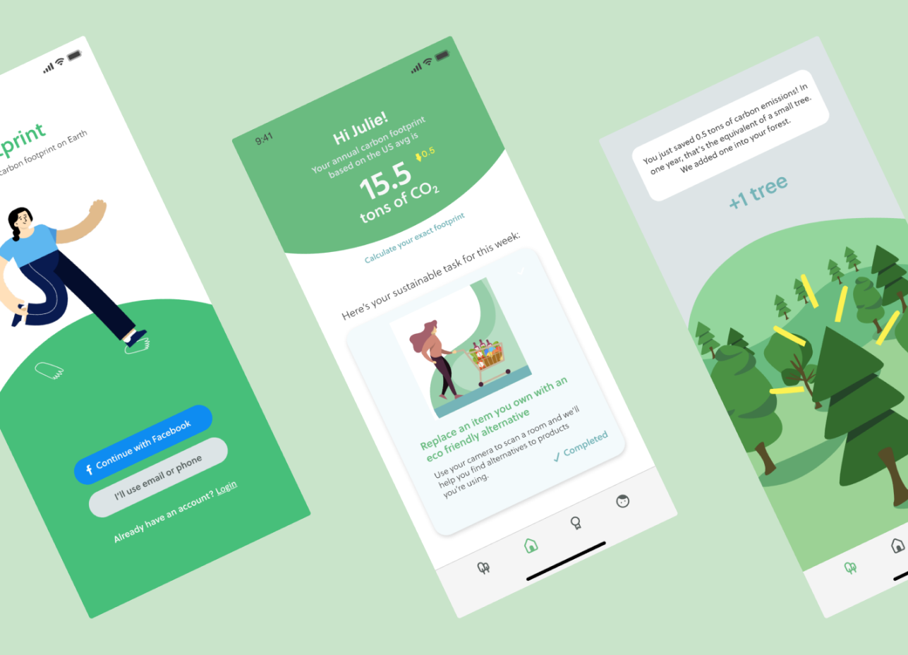
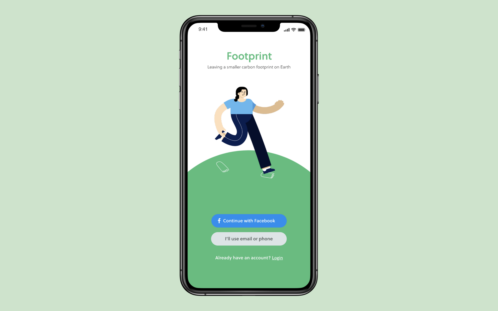
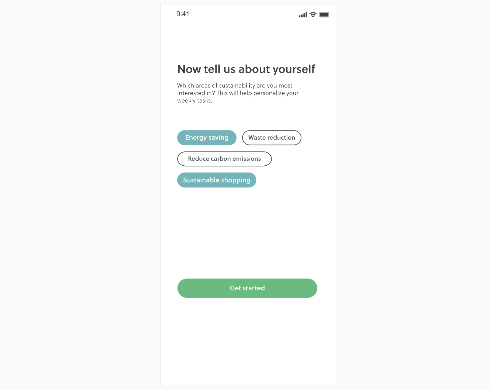
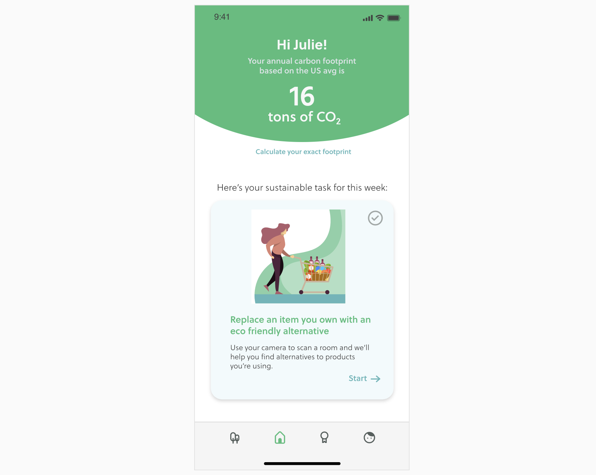
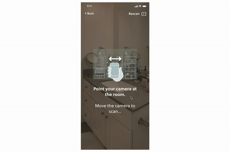
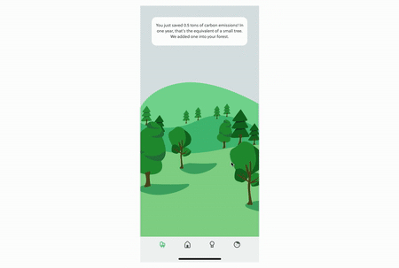
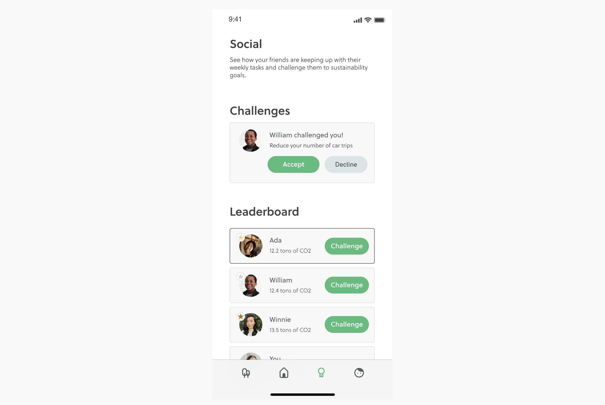

Background
Two months after completing our first design contest, I convinced my good friend Julie Wong to enter another Adobe Creative Jam challenge. This time Adobe partnered with Oxfam America to lead a week long challenge where we brainstormed app ideas to transform personal values into actions with measurable benefits.
Representing team "Sourdough Starter," Julie and I designed Footprint, an app that encouraged users to take sustainable actions to reduce their carbon footprint.
The Challenge
"Name and design an app that turns personal values into actions that have a measurable benefit. Use technology to make supporting causes more than just a transactional experience."
Our Process
To start this design challenge, we needed to answer two questions:
1. Which value do we want to focus on?
We believed that focusing on a specific area would help us create a more cohesive app idea. As our first step, we explored different categories and the relevant actions people could take:

We decided to focus on sustainability — a value that we were both familiar with. We had a rough idea of what actions people could take and felt that sustainability was an area with more measurable and tangible impact.
2. What actions can users take?
After deciding our area of focus, we brainstormed a list of actions users could take to have an environmental impact. These actions were grouped into the following categories:
-
Purchases (tracking plastic usage, living minimally, limiting purchases)
-
Sustainable appliances/electronics (reducing household energy use, upgrading to energy efficient devices)
-
Transportation (relying less on cars)
-
Fashion thifting, buying secondhand, donating instead of trashing)
-
Groceries/food/garden (eating locally)
-
Home goods (purchasing goods from retailers that share your environmental values)
Ideation
How do we motivate users to take action?
To put this all together, we brainstormed ways users could interact with the app:
-
We considered having a wiki-style app, but it required a lot of motivation for the users to search through activities they could do.
-
A daily challenge could limit the work needed to find an activity, but would it feel more of a hassle or a chore?
-
Gamifying the app with a point system could motivate people to complete tasks, but would that be sustainable motivation in the long run?
How might we motivate people to become more sustainable? How could we help them internalize the impact of their actions?
Introducing Footprint

*Illustration library used in the designs is credited to Pablo Stanley

Select which areas of sustainability you're most interested in

Be greeted with a weekly curated task

Complete interactive, technology driven tasks and learn about eco-friendly product replacements

Internalize and visualize the effects of your actions on your carbon footprint through your own virtual forest

Challenge your friends to sustainable activities and see who's #1
Results
We were invited to the live finale where my teammate Julie presented on behalf of our team. At the end, the judges announced the top 5 teams and we ended up placing 1st!

Future Considerations
With the limited time we had to finish the project, we focused on major aspects of the app to address the prompt but did not flesh out the fine details. After reflecting on the project, in future iterations I would like to focus on:
Exploring other sustainable activities that a person could take
In our prototypes, we focused on one activity for demonstration purposes, but it would be good to brainstorm other interactive, technology-based activities so that there are enough things for a user to do for at least 52 weeks.
Setting better expectations
One feedback we got from judges was that people may be data-wary and concerned about how these some of activities use their information/data. In future iterations, I would like to set better expectations with the user so that they don't shy away from completing actions that can help them with their sustainability goals.
Expanding on the reward system
While this iteration, we focused on a basic reward system, I would like to see the virtual forest idea could be made more interesting and interactive. Instead of adding a tree every time an action is completed, I would love to explore finding plants that match the exact the carbon footprint offset. Since users can challenge their friends and see points accumulated by them, I would also like to see how friends could visit and compare each other's virtual gardens.
Thank you Oxfam America & Adobe for the opportunity to participate in this Creative Jam!
This was a super fun challenge where we got to explore a design problem outside of our typical 9-5 job. It encouraged us to think about our own values and what we could do to stick to goals we set.